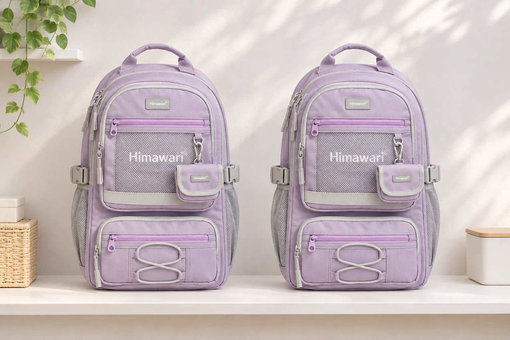
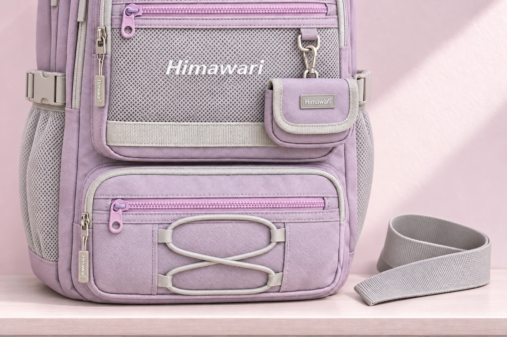

백팩 두 개를 포개면 어느 부분부터 맞닿을까

계절마다 쓰는 백팩이 달라지면 선반 한 칸에 두 개를 겹쳐 두고 싶어집니다. 빈 가방이면 납작하게 놓아도 괜찮을 것 같지만 두 가방 사이에는 몸판만 있는 것이 아닙니다. 앞 포켓의 지퍼 손잡이와 옆 버클, 어깨끈의 조절 부품이 서로 다른 높이로 나와 있습니다. 포개는 방향을 고를 때는 어느 가방을 위에 둘지보다 두 가방 사이에 무엇이 놓이는지부터 살펴볼 수 있습니다.
No.9291 라벤더는 이 접촉을 생각해 볼 수 있는 예시입니다. 앞면에는 망 포켓과 작은 파우치, 아래쪽 포켓과 가로지르는 고무줄이 보입니다. 옆면의 버클도 앞면과 같은 평면에 놓여 있지는 않습니다. 이 글은 실제로 가방을 눌러 변형을 측정한 결과가 아닙니다. 두 가방의 방향을 가정해 부품이 만나는 위치와 한 개만 꺼낼 때의 동작을 비교합니다.
앞면끼리 마주 두는 경우
첫 번째 배치는 아래 가방의 앞면 위로 다른 가방의 앞면을 향하게 놓는 방식입니다. No.9291처럼 앞에 작은 파우치가 돌출된 가방이라면 몸판 전체가 고르게 맞닿는다고 보기 어렵습니다. 위 가방에서 내려오는 포켓이나 지퍼 손잡이가 아래 가방의 망과 파우치 사이에 닿을 수 있습니다. 바깥에서 두 가방의 옆선만 보면 이 사이에 어떤 부품이 놓였는지 가려집니다.
앞포켓을 비웠다고 해서 지퍼 손잡이나 파우치의 가장자리가 없어지지는 않습니다. 포켓의 내용물과 외부 부품의 돌출은 따로 보아야 합니다. 지퍼 손잡이를 어느 방향으로 두었는지, 작은 파우치가 가방 사이에 끼어 있는지부터 관찰합니다. 한 번 포갰을 때 겉모양이 평평하다는 이유로 오래 두어도 자국이 남지 않는다고 판단하지 않습니다. 접촉한 자리의 변화는 소재와 놓인 상태에 따라 달라질 수 있습니다.
이 방향에서 아래 가방을 꺼내려면 위 가방을 먼저 들어내야 할 가능성도 생각해야 합니다. 아래쪽 손잡이만 잡아 끌면 앞포켓의 부품이 서로 스치며 지나갈 수 있습니다. 자주 쓰는 가방을 아래에 두고 매일 그 동작을 반복한다면 포개서 줄인 공간만큼 꺼내는 과정이 늘어날 수 있습니다. 선반 밖에 위 가방을 잠시 놓을 자리가 있는지도 같은 배치에서 확인합니다.

앞면과 등판을 맞대는 경우
두 번째는 아래 가방의 앞면 위에 다른 가방의 등판이 오도록 두는 방식입니다. 부드러운 등판이 앞포켓을 덮으니 괜찮을 것 같지만 등판 쪽에도 어깨끈과 조절 부품이 남습니다. 끈을 정리하지 않은 채 겹치면 몸판 사이에서 접힌 끈이 어느 포켓 위에 놓였는지 알기 어렵습니다. 표면이 부드러워 보이는 면과 그 면에 달린 부품을 구별할 필요가 있습니다.
No.9291의 작은 파우치 위로 다른 가방의 끈이 지나가는 상황을 가정해 봅니다. 위 가방을 들어 올릴 때 끈이 자연스럽게 빠지는지, 파우치의 연결 고리나 지퍼 손잡이 근처에 머물러 있는지 살펴봅니다. 사진만으로 두 부품이 반드시 걸린다고 단정할 수는 없습니다. 다만 꺼낼 때 두 가방이 함께 움직이는지 확인할 위치는 구체적으로 정할 수 있습니다. 끈을 당겨 빼기보다 위 가방을 받쳐 들어 접촉을 풀 수 있는 배치인지 살핍니다.
가방 하나를 뒤집는 것만으로 나머지 부품의 자리까지 정리되는 것은 아닙니다. 등판끼리 놓을 때에도 두 가방의 어깨끈이 포개지거나 손잡이가 다른 끈 안으로 들어갈 수 있습니다. 어느 쪽이 항상 더 낫다는 순서를 외우기보다 실제 두 가방의 끈을 밖에서 확인할 수 있는지 봅니다. 모양이 다른 가방을 함께 둘수록 한 가방의 평평한 면이 다른 가방에도 그대로 대응한다고 생각하기 어렵습니다.
한 개만 꺼내는 순간까지 비교하기
보관한 두 가방 가운데 오늘 쓸 것은 하나라고 가정해 봅니다. 위 가방을 들어내는 순간 아래 가방의 손잡이나 끈이 따라 올라오지 않는지 먼저 봅니다. 두 손으로 각각 받쳐 떼어낼 자리가 없으면 선반 안에서 급하게 당기게 될 수 있습니다. 평소 손이 닿는 높이에서 가방의 무게를 받치고 부품 사이를 볼 수 있는지까지가 포개는 배치의 사용 조건입니다.
No.9291의 공개 외부 크기는 가로 31cm, 세로 45cm, 폭 15cm입니다. 이 폭을 두 번 더해 포갠 높이를 30cm로 정할 수는 없습니다. 내려놓는 방향과 빈 몸체의 모양, 서로 닿는 포켓과 끈에 따라 높이가 달라집니다. 선반의 안쪽 높이에 숫자만 대입하기보다 손잡이를 잡고 한 개를 들어 올릴 여유까지 실제 자리에서 비교합니다. 위 가방을 완전히 빼야 아래 가방을 볼 수 있다면 그만큼 앞쪽 공간도 필요합니다.
나란히 세워 두는 배치와도 비교할 수 있습니다. 두 가방이 차지하는 가로 자리는 늘어나지만 앞포켓이 서로 마주 눌리는 조합을 피하고 원하는 가방에 바로 손을 댈 수 있습니다. 이 글의 두 가방 사진은 같은 No.9291을 따로 배치한 AI 연출로, 특정 선반에서의 수납 결과를 실측한 사진은 아닙니다. 실제 자리에서는 옆 버클이나 파우치가 이웃 가방에 닿지 않을 정도의 간격도 함께 살핍니다.
빈 가방을 보관하기 위한 기본 관리와 두 가방을 포개는 판단은 나누어 둡니다. 비우고 관리한 뒤에도 서로의 부품이 가려지고 꺼낼 때 같이 움직이는 배치라면 두 개를 한데 놓는 방식부터 바꿔 볼 이유가 있습니다. 짐이 없다는 사실보다 가방 사이에서 닿는 면과 매번 손이 지나가는 길이 더 구체적인 판단 자료가 됩니다.